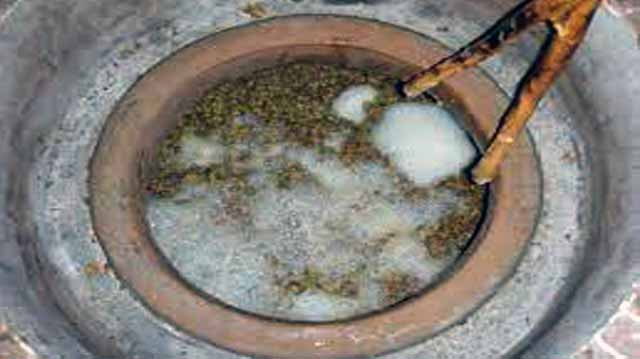

ღვინო ხვანჭკარა
ხვანჭკარა — ადგილწარმოშობის დასახელების, კონტროლირებადი, უმაღლესი ხარისხის წითელი ბუნებრივად ნახევრადტკბილი ღვინო. იგი მზადდება ალექსანდროულისა და მუჯურეთულის ჯიშის ყურძნისაგან. ღვინო „ხვანჭკარა“ ხასიათდება მუქი ლალისფერი შეფერვით, გემოზე ჰარმონიული, ხავერდოვანი, დახვეწილი, სასიამოვნო სიტკბოთი, ხილის ტონებით და ჯიშური არომატით.
ღვინო ქინძმარაული
ქინძმარაული — ადგილწარმოშობის დასახელების, კონტროლირებადი უმაღლესი ხარისხის წითელი ბუნებრივად ნახევრადტკბილი ღვინო. მზადდება საფერავის ჯიშის ყურძნისაგან. ღვინო „ქინძმარაული“ ხასიათდება მუქი ბროწეულისფერი შეფერვით, გემოზე ჰარმონიული, სრული, ხავერდოვანი, დახვეწილი, სასიამოვნო სიტკბოთი, ხილის ტონებით და ჯიშური არომატით.
გამოფენა
ღვინის კულტურა
ყურძნის წვენის დადუღება ღვინის დაყენების ძირითადი ტექნოლოგიური პროცესია, ანუ ყურძნის წვენი რომ ღვინოდ იქცეს, მან აუცილებლად ალკოჰოლური დუღილის პროცესი უნდა გაიაროს. ჩვენი წინაპრის მიგნების გენიალობა სწორედ ამაში მდგომარეობს. ფრანგი ქიმიკოსის, ლ. პასტერის გამოთქმის თანახმად, „არ არსებობს დუღილი სიცოცხლის გარეშე“. ეს იმას ნიშნავს, რომ მხოლოდ ცოცხალი ბაქტერიების ცხოველქმედების შედეგია ყურძნის შაქრების ნახშირორჟანგად და სპირტად დაშლა. ყურძნის ტკბილი წვენი სწორედ ამ გარდაქმნათა დამთავრების შემდეგ გადაიქცევა ალკოჰოლურ სასმელად, ახალგაზრდა ღვინოდ ანუ მაჭრად. ამიტომ ამ პროცესის წარმართვის დროს, მეღვინეს განსაკუთრებული სიფრთხილე მართებს, რადგან ღვინის ხარისხი სწორედ ამ პროცესის სწორად წარმართვაზეა დამოკიდებული. ალკოჰოლური დუღილი რთული ბიოქიმიური პროცესია, რომელიც საფუვრის უჯრედის ფერმენტების ზემოქმედებით მიმდინარეობს, ამ დროს, გარდა ძირითადი პროდუქტებისა (სპირტი და ნახშირორჟანგი), გამოიყოფა მეორეული პროდუქტები: გლიცერინი, რძის მჟავა, ქარვის მჟავა, ლიმონმჟავა, ძმარმჟავა, აცეტალდეჰიდი, აცეტონი, უმაღლესი სპირტები და ბევრი სხვა პროდუქტი, რომელთა რაოდენობა ღვინოში განაპირობებს მის ხარისხს. ღვინო ჩვენმა წინაპარმა მისცა კაცობრიობას და დღეს პრაქტიკაში გამოყენებული ღვინის დაყენების ყველა ტექნოლოგია მათი შექმნილია. მართალია, ამ ტექნოლოგიებს წერილობითი სახით ჩვენამდე არ მოუღწევია (საერთოდ წერილობითი სახით თუ არსებობდა, ესეც საეჭვოა), მაგრამ ის ფაქტი, რომ ჩვენს წინაპარს ღვინის დაყენება არასდროს შეუწყვეტია და დღეს ღვინის დაყენების ოფიციალურად ცნობილი 15 ტექნოლოგია გვაქვს, იმის დასტურია, რომ ღვინის დაყენების იმ ტექნოლოგიათა უმრავლესობამ, რომლებიც ჩვენმა წინაპარმა საუკუნეების განმავლობაში შექმნა, ჩვენამდე მოაღწია, ხოლო რომლებიც ჩვენს ჩამონათვალში დღემდე არაა შესული, ხალხის მეხსიერებასა და იმ არტეფაქტებშია, რომლებიც ჯერ კიდევ მისაკვლევია. იმედია, ჩვენი არქეოლოგებისა და ეთნოგრაფების ძალისხმევით მალე ყველა მათგანი იქნება მიკვლეული და კუთვნილ ადგილს დაიკავებს ღვინის დაყენების ქართულ ტრადიციულ მეთოდთა ჩამონათვალში.
მისამართი
| ორშაბათი: | 10 - 18სთ |
|---|---|
| სამშაბათი: | 10 - 18სთ |
| ოთხშაბათი: | 10 - 18სთ |
| ხუთშაბათი: | 10 - 18სთ |
| პარასკევი: | 10 - 17სთ |
ვიზიტის აღება